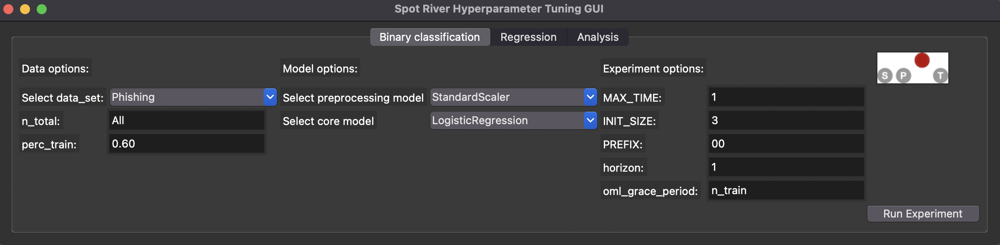

17 The spotriver GUI
17.1 Starting the GUI
The GUI can be started by executing the spotRiverGUI.py file in the spotRiver/gui directory.
>> python spotRiverGUI.py
After the GUI window has opened, the user can select the task:
- Binary Classification
- Regression
Depending on the task, the user can select the data set, the preprocessing model, the core model, and the evaluation function.
17.2 Binary Classification
If the Binary Classification task is selected, the user can select pre-specified data sets from River the Data drop-down menu.
17.3 Regression
17.4 Starting a New Experiment
An experiment can be started by clicking on the Run Experiment button. The GUI calls run_spot_river_experiment from spotRiver.tuner.run.py. Output will be shown in the shell window from which the GUI was started.
17.5 Starting and Stopping Tensorboard
Tensorboard is automatically started when an experiment is started. The tensorboard process can be observed in a browser by opening the http://localhost:6006 page.
spotPython.utils.tensorboard provides the methods start_tensorboard and stop_tensorboard to start and stop tensorboard as a background process. These will be used in future versions of the GUI to start and stop tensorboard. Currently, only the start_tensorboard method is used to start tensorboard as a background process.
17.6 Analysis
17.7 Internal Methods
The spotriver GUI uses the following internal methods:
run_spot_river_experimentfun_oml_horizonevaluate_modeleval_oml_horizon
17.7.1 The run_spot_river_experiment Method
run_spot_river_experiment calls the tuner spot after processing the following steps:
- Generate an experiment name.
- Initialize the
fun_controldictionary. - Select the data set based on the
data_setparameter and generate a data frame. - Splits the data into training and test sets.
- Sets the oml_grace_period parameter.
- Select the preprocessing model based on the
prepmodelparameter. - Sets the weights for the evaluation function and the weight coeffient.
- Loads the coremodel based on the
coremodelparameter with hyperparameters set to the values specified in theRiverHyperDictdictionary. - Determines the default hyperparameters.
- Selects the evaluation function:
HyperRiver.fun_oml_horizon. - Determines hyperparameter types, names, lower and upper bounds for the
spottuner. - Starts tensorboard as a background process.
- Starts the
spottuner.
When the tuner is finished, the following steps are performed:
- The tensorboard process is terminated.
- The spot_tuner object and the
fun_controldictionary are returned.
After the tuner is finished, the following information is available:
The run_spot_river_experiment method is located in spotRiver.tuner.run.py and is called by the GUI. It calls the fun_oml_horizon evaluation function and the spot tuner.
17.7.2 The fun_oml_horizon Method
The fun_oml_horizon method is located in spotRiver.hyperriver.py file. It calls the evaluate_model method, which in turn calls the eval_oml_horizon method from the spotRiver.evaluation.eval_bml.py file.